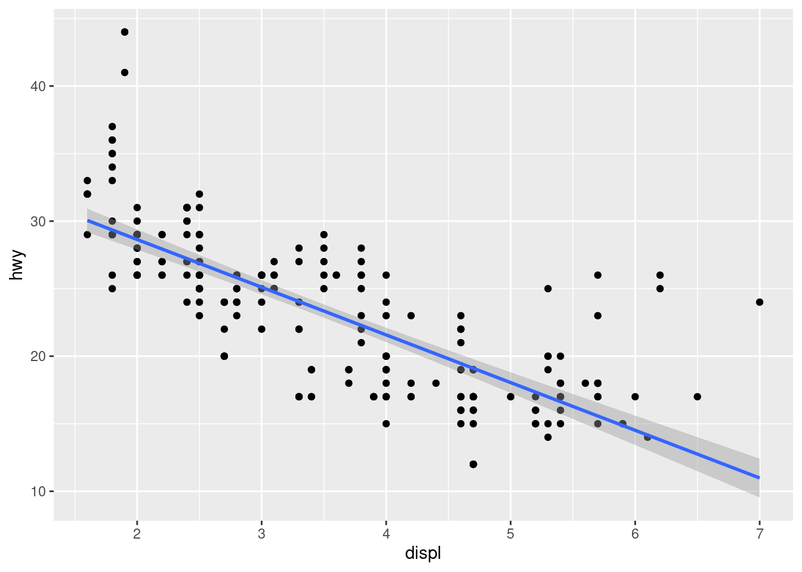

my_variable <- 10
my_varıableError in eval(expr, envir, enclos): object 'my_varıable' not foundWhy does this code not work?
my_variable <- 10
my_varıableError in eval(expr, envir, enclos): object 'my_varıable' not foundThe i is dotless in the call of my_variable and so doesn’t match.
error: true
In Quarto this chunk ran using error: true which shows the error in the book, useful for instances where code errors are shared in Quarto presentations or on websites!
Tweak each of the following R commands so that they run correctly:
libary(todyverse)
ggplot(dTA = mpg) +
geom_point(maping = aes(x = displ y = hwy)) +
geom_smooth(method = "lm)Corrected:
library(tidyverse)── Attaching core tidyverse packages ──────────────────────── tidyverse 2.0.0 ──
✔ dplyr 1.1.2 ✔ readr 2.1.4
✔ forcats 1.0.0 ✔ stringr 1.5.0
✔ ggplot2 3.4.2 ✔ tibble 3.2.1
✔ lubridate 1.9.2 ✔ tidyr 1.3.0
✔ purrr 1.0.1
── Conflicts ────────────────────────────────────────── tidyverse_conflicts() ──
✖ dplyr::filter() masks stats::filter()
✖ dplyr::lag() masks stats::lag()
ℹ Use the conflicted package (<http://conflicted.r-lib.org/>) to force all conflicts to become errorsggplot(data = mpg) +
geom_point(mapping = aes(x = displ, y = hwy)) +
geom_smooth(mapping = aes(x = displ, y = hwy),
method = lm)`geom_smooth()` using formula = 'y ~ x'
There are a lot of corrections needed in this code. It includes:
todyverse should be tidyverse)dTA instead of data)maping instead of mapping, between x = displ and y = hwy" before "lmmethod = (note)
"lm" will work but RStudio will flash up an error in the margin saying unexpected token if you click on the red circle with white cross.
geom_smooth() also requires its own mapping information as the aes() isn’t available to that line. If this were global it would be:library(tidyverse)
ggplot(data = mpg, mapping = aes(x = displ, y = hwy)) +
geom_point() +
geom_smooth(method = lm)`geom_smooth()` using formula = 'y ~ x'Press Option + Shift + K / Alt + Shift + K. What happens?
The keyboard shortcuts overlay menu comes up in RStudio.
How can you get to the same place using the menus?
Tools/Keyboards Shortcuts Help
Let’s revisit an exercise from the https://r4ds.hadley.nz/data-visualize#sec-ggsave. Run the following lines of code.
Which of the two plots is saved as
mpg-plot.png?
The bar plot from the object my_bar_plot is saved.
Why?
This has been explicitly detailed in the ggsave() function. Both plots are also saved as objects (https://r4ds.hadley.nz/workflow-basics#sec-whats-in-a-name) so they can be referred to in the function.